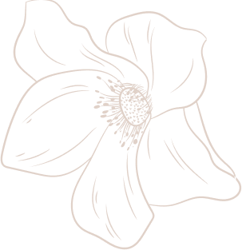
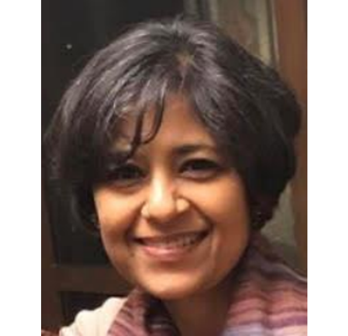

KATYAYANI
AGARWAL
Independent Art Historian , Curator and Consultant for Heritage & Cultural Spaces

Katyayani Agarwal is a freelance Curator and Consultant in the Art, Culture and Heritage sector of India, having experience of ~20 years. She is married to Alok Agarwal, a highly revered senior corporate executive and expert in the field of Mergers and Acquisitions. Her early education was from Loreto Convent, Lucknow and she graduated in Economic Hons. and History. She trained under a leading art conservator for several years. She hails from the illustrious Malaviya family and was exposed to the rich cultural heritage of the country from a very early age. She has learnt Indian classical vocal music and is a ‘Visharad’. She is passionate about reviving and conserving rare and fading arts, crafts and traditional knowledge systems of India. Katyayani has carved a niche for herself in the realm of Design and is leading several Architectural projects.
Curated and conceptualized by Katyayani Agarwal. The project was fully led and the operations are now being managed by her. She was given complete ‘carte lanche’ by the funders and was also responsible for appointment and onboarding of requisite consultants in consultation with them.
Conceptualized and curated by Katyayani Agarwal. She also managed to secure funding for the project. The project is being led and managed by her including appointment of requisite consultants in consultation with funders and INTACH.
As the Founder and Managing Trustee of Datri Foundation, an NGO, Katyayani is working on and supporting several projects for the revival and conservation of some of the lesser known and fading traditions and arts of the country like :
- Sanjhi and Jal Sanjhi
- Bauls
- Phad
- Chhau Dance & mask making
Datri Foundation has collaborated with several well known institutions like IGNCA, INTACH, Hyundai Art for Hope, Ministry of Culture etc. She supports skill centers across the country to empower women at the grassroots.